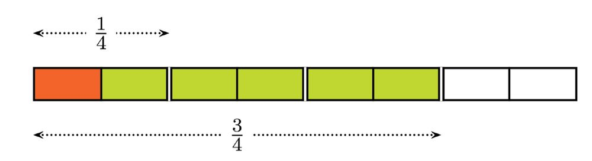
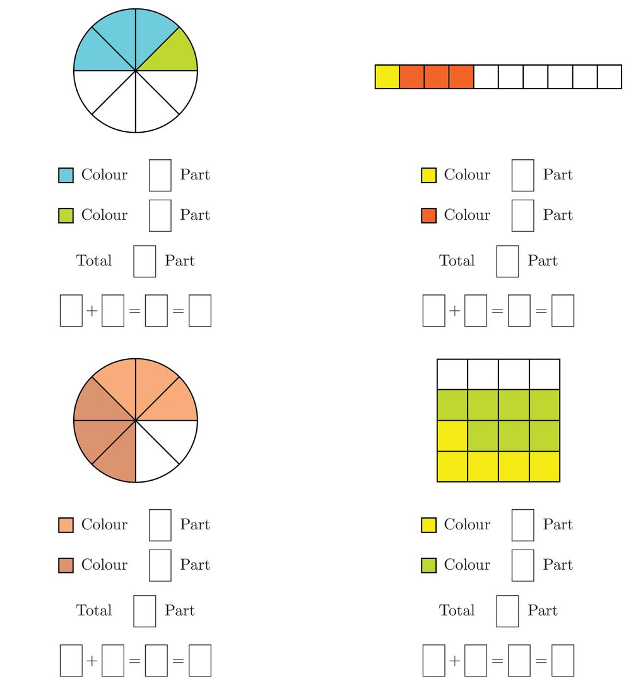
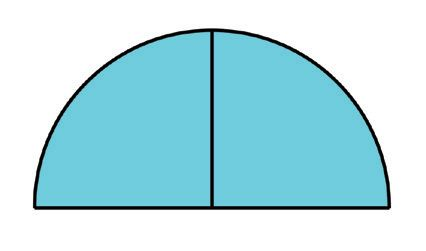
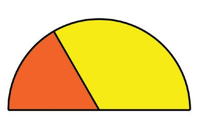
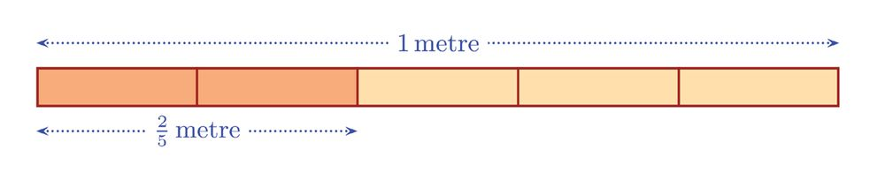
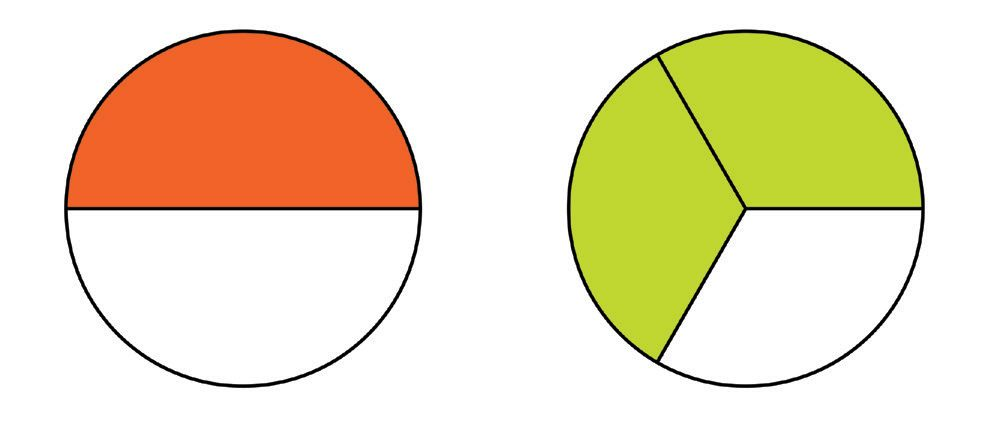

See the ad?
The table shows the original price of
some of the things in this shop. We want
to calculate the new prices: How?
Its 10 rupees less for every 100 rupees.
So to compute the reduction in price,
we must first find out how many 100s
are there in the original price and then
multiply it by 10.
For example , the original price of a fan
is 1200 rupees.
That is 12 hundreds: so the reduction in
price is
12 × 10 = 120 rupees
We can do both operations together:
1200
100
× 10 = 120
So the price of a fan now is 1200 − 120 = 1080 rupees.
Similarly, cant you compute the prices of others now?
135
How Much of Hundred?
Page 48
Figure fig_ch04_p048_01 (Page 48)
Mathematics
Loans
A co-operative bank offers agricultural loans. It must be paid back in
one year; and for every hundred rupees, 12 rupees more should be
given.
See the amounts of loan some people have taken out:
Sabu
Rs. 4000
Suma
Rs. 5500
Raji
Rs. 1550
Gokul
Rs. 3750
Nabeel
Rs. 3800
Calculate how much each should pay back.
To know how much more each should give back, we must find out
how many hundreds are there in the loan and multiply it by 12.
As before, we need only divide by 100 and multiply by 12.
For example, Rajis loan is 1550 rupees.
To calculate how much more she has to pay back, we divide 1550 by
100 and multiply by 12:
1550
100
× 12 = 186
So, Raji has to pay back 1550 + 186 = 1736 rupees.
Like this, calculate how much each has to pay back.
Percent
In the first problem, the reduction in price is 10 rupees for each
hundred rupees.
We say that there is 10 percent reduction in price.
The word per means for
each. The cent part
comes from the Latin
word centum meaning
hundred.
Part - 2
10 percent is written as 10%.
In the loan problem, 12 rupees more for every
hundred rupees should be paid back.
That is, 12%(12 percent) more should be paid
back.
136
Page 49
Figure fig_ch04_p049_01 (Page 49)
Class - 6
Donations
Each month Joseph donates 8% of his earnings to the Medical Aid
Fund. He earned 12000 rupees in January. How much should he donate
that month?
8 percent means ,8 for each hundred. So we must find out the number
of hundreds in 12000 and multiply it by 8:
12000
100
× 8 = 120 × 8 = 960
So, Joseph would donate 960 rupees that month.
8
This can also be calculated as 12000 × 100 .
8
That is, 100 of 12000.
Josephs friend Ali donates 12% of his monthly earnings. In January
he earned 15000 rupees. How much would he give.
We can think of 12% as 12 for each hundred and calculate
15000
100
× 12
12
Or we can think of 12% as 100 and calculate.
12
15000 × 100
Do it any way you like.
137
How Much of Hundred?
Page 50
Figure fig_ch04_p050_01 (Page 50)

Figure fig_ch04_p050_02 (Page 50)

Figure fig_ch04_p050_03 (Page 50)
Mathematics
1. See the ad.
30% off
on all
items
Sheela bought cloths worth1800 rupees. How much should
she pay?
2. Johny save 15% of his earnings each month. In January he
got 32000 rupees. How much would he save?
3. A TV manufacturer decides to raise prices by 5% next month.
The price of a model is 26000 rupees now. What would be
its price next month?
4. A car manufacturer decides to lower prices by 2% from next
month .What would be the price next month for a car, now
priced at 250000 rupees?
5. A company pays 8% of a months salary as festival allowance.
How much festival allowance would a person whose salary is
12875 rupees get?
Another percent
In a school, 240 children took an exam and 40% of them got A grade
in all subjects.
What does it mean?
There is no sense in saying that 40 children out of every 100 got A
grade.
Part - 2
138
Page 51
Figure fig_ch04_p051_01 (Page 51)

Figure fig_ch04_p051_02 (Page 51)
Class - 6
Here it means,
40
100
of the total number of children got A grades in
all subjects.
That is, the number of children who got
A grade is
40
240 ×
100
= 96
What is 20% of 60?
What about 60% of 20.
Are 40% of 30 and 30%
of 40 equal?
Lets look at another problem:
There are 40 children in a class and 50% of them are boys.
How many boys are there in this class?
50% of the class are boys means,
in the class are boys.
That is,
1
2
50
100
of the total number of children
of the total number, or half the total.
Half of 40 is 20.
So there are 20 boys in the class.
Election
There are 1200 voters in a
panchayat ward and 80% of them
voted in an election. How many
people voted?
The number of persons who voted
is
80
100
of the total number of
voters.
So the number of persons voted
is
80
100
of 1200.
That is, 1200 ×
80
100
= 960
139
How Much of Hundred?
Page 52
Figure fig_ch04_p052_01 (Page 52)

Figure fig_ch04_p052_02 (Page 52)
Mathematics
1. In a company, 46% of the workers are women.It has 300
workers in all .How many of them are women?
2. In a class, 20% of the children are members of the Math
Club. There are 35 children in the class. How many are
members of the Math Club?
3. In an election , the candidate who won got 54% of the votes.
1450 votes were polled. How many votes did the winner get?
4. The price of a car is 530000 rupees now. The manufacturer
decides to reduce the price by 2% next month .What would
be the reduction in price? What would be the new price?
5. 1300 children took the NuMATS test and 65%of them scored
more than 25. How many are they?
The other percent
60% of the workers in a company are women.
What all things do we know from this statement?
60
100
of the total number of workers are women.
So what fraction of the workers are men?
40
100
, right?
That is 40% of the workers are men.
In other words,
3
5
of the workers are women and
2
5
of the workers
are men (How come?)
There were 320 children in the sub-district camp for scout and guides.
55% of them were guides and the rest, scout. How many scouts were
there?
The percent of scouts is 100 − 55 = 45.
So the number of scouts is 320 ×
1. Of the 420 children in a school, 5% did not come one day. How
many came to school that day?
2. There are 280 plants in Sabus garden 70% of them are flowering.
How many are non flowering?
3. There are 480 vehicles in a parking lot. Of these, 45% are
motorbikes and 4% are cars.The rest are mini buses. How many
minibuses are there?
How many in all?
In a compound, there are 32 coconut trees and they form 50% of the
total number of trees.
How many trees are there in all?
50% of the trees means
50
=
100
1
2
of the trees.
Thus, half the trees are coconut palms and so the total number of
trees is double the number of coconut palms.
That is the total number of trees = 2 × 32 = 64.
Math Fair
In the sub-district Math fair, 60% of the children were girls. The actual
number of girls was 108. How many children were there in all?
The number of girls is
This means
3
5
60
100
=
3
5
of the total.
of the total number is 108.
141
How Much of Hundred?
Page 54
Figure fig_ch04_p054_01 (Page 54)

Figure fig_ch04_p054_02 (Page 54)
Mathematics
So the total number is
That is, 108 ×
5
3
5
3
times 108.
= 180.
Thus we see that 180 children were there at the math fair.
1. 26 children of a class got A grade in an exam. It is 65% of
the total number in the class. How many are there in the class?
2. Jayan spent 8400 rupees in a month for food and it is 35% of
his earnings. How much did he earn that month?
3. 32 teachers of a school are male and they form 40% of the
total number of teachers. How many teachers are there in
the school?
Percent of percent
Changing percent
A man spends 20% of his earnings
on education and 25% of this
amount on books. What percent
of his total earnings does he spend
on books?
A shop offers 20% reduction in prices. Ravi
bought a shirt worth 400 rupees from this shop.
How much should he pay?
25
It is 100 of
earnings.
20
of the total
100
25
20
of
means
100
100
25 1
25
20
5
× 100 = 5 × 100 =
100
100
Thus the amount spend on books
is 5% of the total earnings.
Now what percent of a number is
40% of its 30% percent?
Part - 2
He need only pay
20
of 400 less.
100
400 ×
20
100
= 80
So, he must pay
400 − 80 = 320 rupees.
There is another way to do this.
The reduction in price is 20% of 400.
So he needs to pay only 80% of 400
80% of 400 = 400 ×
Now look at another problem:
In a school, there were 800 children last year and
this year, the number is 12% more. How many
children are there now?
12
The increase is 800 × 100 = 96
So then we can calculate the number of children
now.
Area
If the length and breadth of a
rectangle are increased by 10%,
by how much percent would the
area increase? What if length is
increased by 10% and the
breadth decreased by 10%?
This we can do in a different way.
12 ⎞
⎛
⎛
12 ⎞
800 + ⎜⎝ 800 × 100 ⎟⎠ = 800 × ⎜⎝1 + 100 ⎟⎠
112
= 800 × 100 = 896
112
We can say 100 times is 112 percent (112%).
1. The price of a bicycle was 3400 rupees last month. Now it is
reduced by 15%.What is the price now?
2. A watch priced at 3680 rupees is now sold for 20% less.What
is the price now?
3. The amount of rainfall this year is calculated to be 20% more
than last year. Last years rainfall was 230 centimetres. What
is the amount of rainfall this year?
4. A person earned 12000 rupees last month and it is 6% more
this month. How much is this months earning?
Fractional percent
25
We have said that 25% of something means 100 of that number;
1
which means 4 of that.
What about 125% of something?
125
1
times
it
;
or
1
of it.
4
100
Thus percent of something means a fraction of it or certain times it.
So, 33 3 % of something means 3 of that.
1. Explain each percent below as a fraction of something.
1
1
ii)
63%
iii)
8 3 % iv)
1
vi)
66 3 %
2
vii)
83 3 %
v) 62 2 %
Part - 2
2
i) 6 4 %
144
1
2
16 3 %
Page 57
Figure fig_ch04_p057_01 (Page 57)
Class - 6
Fraction and percent
We have seen that any percent can be explained as a fraction .On the
other hand, can we express every fraction of something as a percent?
For that, we look at percents in a different way.
For example,
1
10% means 10 times 100 .
We can put it differently;
1
10% means of 10 times 100
.
Similarly, we can say
1
20% means 100 of 20 times.
1
25% means 100 of 25 times.
1
1
1
12 2 % means 100 of 12 2 times.
That is the fraction expressing a percent as a part or times of something
1
is 100 of the number given as a percent.
So the percent number is 100 times this fraction.
2
For example, lets compute what percent of something, 5 of it gives.
2
1
is 100 of the percent number.
5
2
So, the percent number is 100 times 5 .
2
× 100 = 40
5
2
Now look at this problem:
In a school, 120 children appeared for SSLC examination. 110 children qualified for higher studies. What part
of the children appeared for examination qualified?
110
11
= 25
120
1
That is, this faraction is the 100 parts of the percent of
children qualified. Then percent of qualified children is
100 times of this. That is,
11
2
× 100 = 91 3
25
2
Therefore, 91 3 % of children is qualified for higher studies.
1. There are 750 children in a school and 450 of them are girls.
What is the percent of girls?
2. Rafi earns 20000 rupees a month and he spends 6400 rupees
from this on food. What percent of his earnings is this?
3. Jameelas salary was 20000 rupees last month and 21000
rupees this month. By what percent has the salary increased?
4. Of 600 grams of sugar, 500 grams is used up .What percent
is left?
5. The sides of a square are increased by 10% to make a larger
square. By what percent is the area increased?
6. Ajayans salary is 25% more than Vijayans salary. By what
percent of Ajayans salary is Vijayans salary less?
Part - 2
146
Page 59
Figure fig_ch04_p059_01 (Page 59)

Figure fig_ch04_p059_02 (Page 59)
Class - 6
1. Express the percent each fraction below indicates.
i)
3
8
ii)
7
20
iv)
28
25
v)
23
iii)
2
3
1
2. What is the difference between 40% of 60 and 60% of 40?
3. In a school there are 1240 children and 30% of them are
girls. How many boys are there in the school?
4. If 40% of 20 is added to 30% of 50, we get 50% of a number.
What is this number?
5. 23 percent of a number is 69. What is the number?
6. 10 percent of a number is 1.5. What is the number?
7. The price of an article was 1800 rupees last month. The price
is reduced by 10% this month .The shopkeeper says this price
would be increased by 10% next month. What would be the
price next month?
8. Kannan has 600 rupees. He gave 50% of this to Thomas.
Thomas gave 33
did Hamza get?
1
3
% of what he got to Hamza. How much
9. All children in class 7 passed the math exam. Details of grades
are given below.
Grade
$ Explaining percent as a rate or as fraction of a
number.
$ Computing specified percent of a number.
$ Explaining the method to compute a number,
given a specified percent of it.
$ Solving practical problems involving percent.
$ Expressing a specific percent of a number as a
fraction of the number and expressing a specific
fraction of a number as a percent of the number.